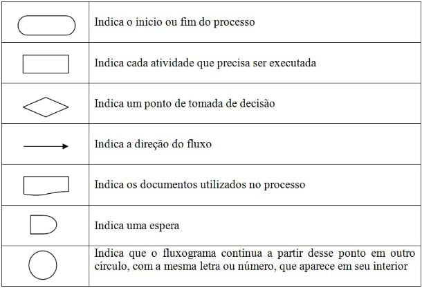
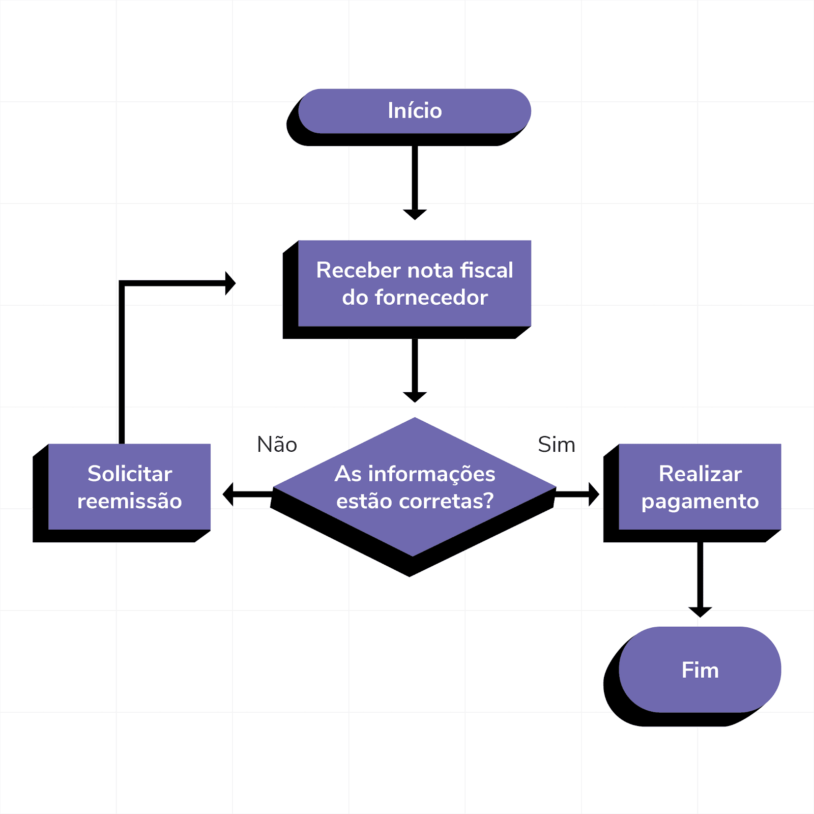
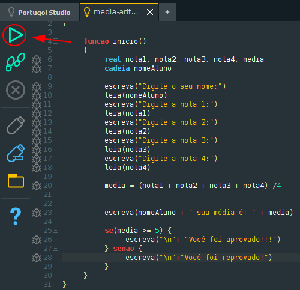

O que é Lógica de Programação?
A lógica de programação é a sequência de raciocínios que leva à solução de um problema por meio da criação de algoritmos. É uma habilidade essencial para qualquer programador.
Elementos da Lógica de Programação
- Algoritmos
- Estruturas de Controle
- Estruturas de Dados
Formas de representar um algoritimo
Existem três tipos mais utilizados de algoritmos que são a descrição narrativa, o fluxograma e o pseudocódigo (também conhecido como Linguagem Estruturada).
Descrição Narrativa
A descrição narrativa consiste em analisar o enunciado do problema e escrever, utilizando uma linguagem natural (por exemplo, a língua portuguesa), os passos que devem ser seguidos para a resolução do problema.
Exemplo:
Um algoritmo simples para somar dois números:
Fluxograma
O fluxograma ilustra as etapas, sequências e decisões de um processo ou fluxo de trabalho. Embora haja vários outros tipos, um fluxograma básico é a forma mais simples de um mapa de processo. Trata-se de uma ferramenta robusta para planejar, visualizar, documentar e otimizar processos em diversas áreas de conhecimento.
O que cada forma indica:
Exemplo
Pseudocódico
Pseudocódigo é uma representação informal de um algoritmo, usada para descrever a lógica de um programa sem se preocupar com a sintaxe de uma linguagem de programação específica. Ele combina elementos de linguagem natural com estruturas de controle, como laços e condições, facilitando a compreensão do que o código fará.
Exemplo
pseudocódico em portugol Uma linguagem ideal para aprendizado.